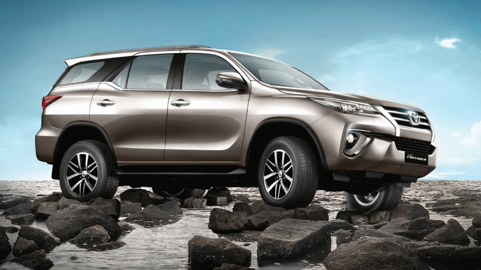

2. Toyota :

Toyota Motor corporation simply known as Toyota.
It is a Japenese multinational automotive manufacture.
Its headquater in Toyota, city Aichi, Japan.
It was Founded by Kiichiro Toyoda and incorporated on August 28, 1937.

| Type | public |
| Industry | Automotive |
| Founded | 28, August 1937 |
| Founder | Kiichiro Toyoda |
| Headquater | Toyota city,Aichi , Japan (location in map) |
| Key people | Takeshi Uchiyamada (chairman) Shigeru Hayakawa (vice chairman) Akio Toyoda (president) |
| Website | Global website Business data for Toyota Motor corp: SEC filling |
In the 1960s, Toyota took advantage of a rapidly growing Japanese economy to sell cars to a growing middle-class, leading to the development of the Toyota Corolla, which would go on to become the world’s all-time best-selling automobile. The booming economy also funded an international expansion that would allow Toyota to grow into one of the largest automakers in the world, the largest company in Japan and the ninth-largest company in the world by revenue, as of December 2020.
Toyota was the world's first automobile manufacturer to produce more than 10 million vehicles per year, a record set in 2012, when it also reported the production of its 200 millionth vehicle.
Toyota Motor Corporation produces vehicles under five brands: Daihatsu ,Hino ,Lexus ,Ranz and the namesake Toyota. The company also holds a 20% stake in Subaru Corporation , a 5.1% stake in Mazda , a 4.9% stake in Suzuki , a 4.6% stake in Isuzu , a 3.8% stake in Yamaha Motor Corporation , and a 2.8% stake in Panasonic, as well as stakes in vehicle manufacturing joint-ventures in China ( GAC Toyota and FAW Toyota), the Czech Republic (TPCA), India (Toyota Kirloskar) and the United States (MTMUS) .
Toyota is listed on the London Stock Exchange, Nagoya Stock Exchange, New York Stock Exchange and on the Tokyo Stock Exchange, where its stock is a component of the Nikkei 225 and TOPIX Core30 indices.
